We are blessed by our intelligence , especially able to find patterns
[Natural selection favors intelligence ,knowledge] Who can tell the difference between usefull and harfull plants ,animals ,had better chance of survival and reproduction .
For hunter gatheerers sky was the calender , changes in sky reflected changes on earth's whether
All the civilizations thought comet as bringers of distruction ,only difference was the way that distruction will come .
Human ability to find patter is two edged sword : we also find patterns when they are not really present
OORT CLOUD is a spherical layer of icy objects surrounding our Sun at a distance of 1 light year .
The Oort cloud was named after Dutch astronomer Jan Hendrik Oort, who discovered it in the 1950s. He was looking to understand why some comets in the solar system have elongated orbits. Scientists now believe the Oort Cloud is the source of most such comets.

Most part of comet is ice , so the number of times they come close to sun ,some of their parts became steam , 1000s of time happening this and ice is completely finishes .then comets gets converted to asteroid.Due to gravity sometimes they gets thrown out of solar system , they move around in space ,still somehow they comes back
Comet :also orbits the Sun, but unlike an asteroid, it's composed of ice and dust
asteroid :is a minor planet—an object that is neither a planet nor a comet—that orbits within the inner Solar System. They are rocky, metallic or icy bodies with no atmosphere.
Our location in milky way galaxy
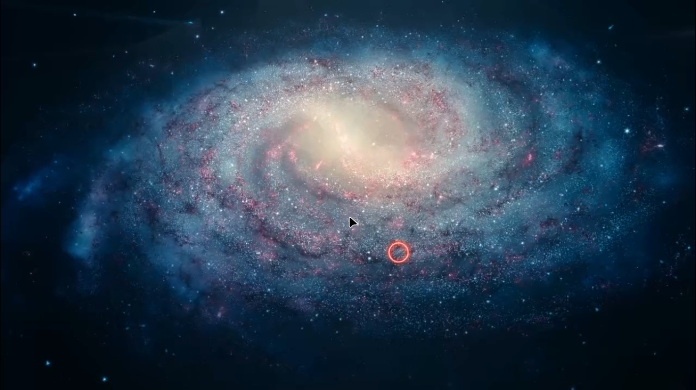Note : If a commet is passing by near to 10 planets , then its path will get affected by the gravity of all 10 planets .
Meting ice of commet as it approaches nearby sun
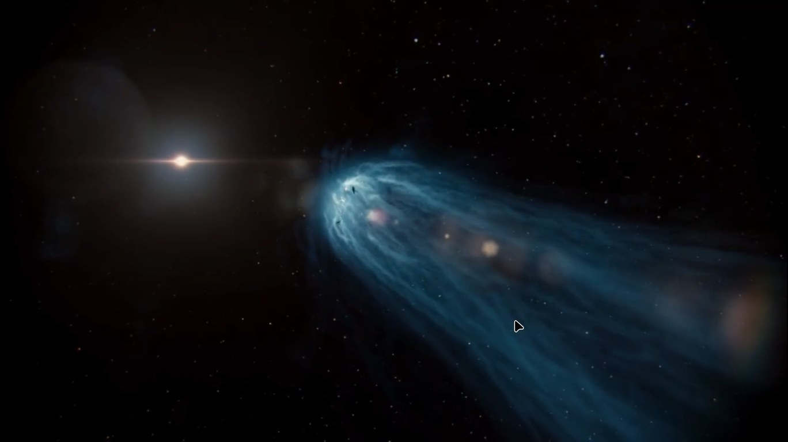Isaac Newton[1643-1727] and Edmond Halley 's friendship
One kid [Edmond Halley] found this Commet unscary and interesting
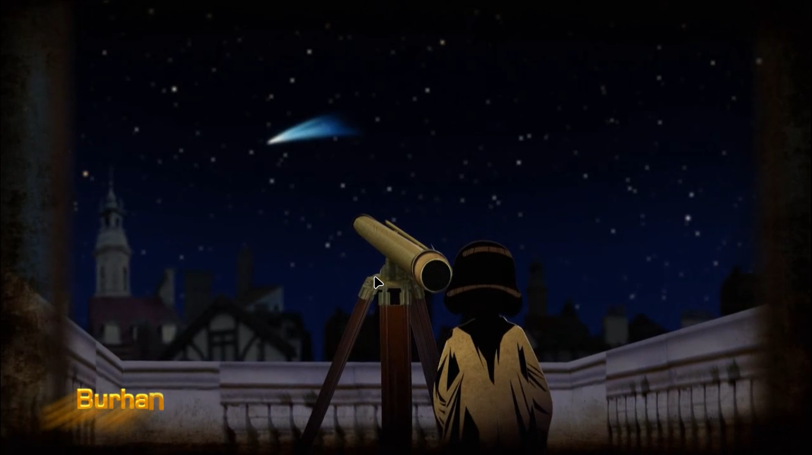Robert Hooke discovered Cell through his self made microscopr
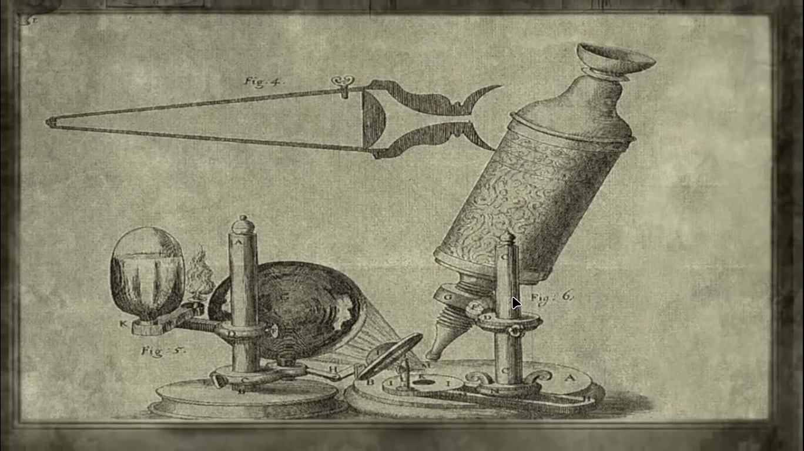Robert Hooke discovered law of elasticity a.k.a Hooke's law
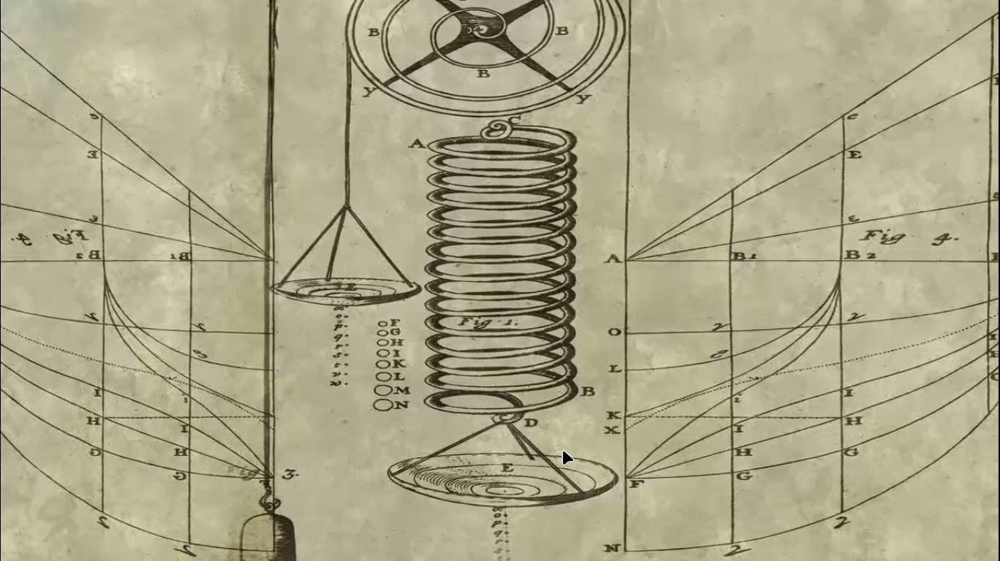before netwon ,Johannes Kepler[1571-1630] ,proved that sun is at the center and planets move in the ovel path , also planets near sun moves at a much faster speed then the planets that are far away.
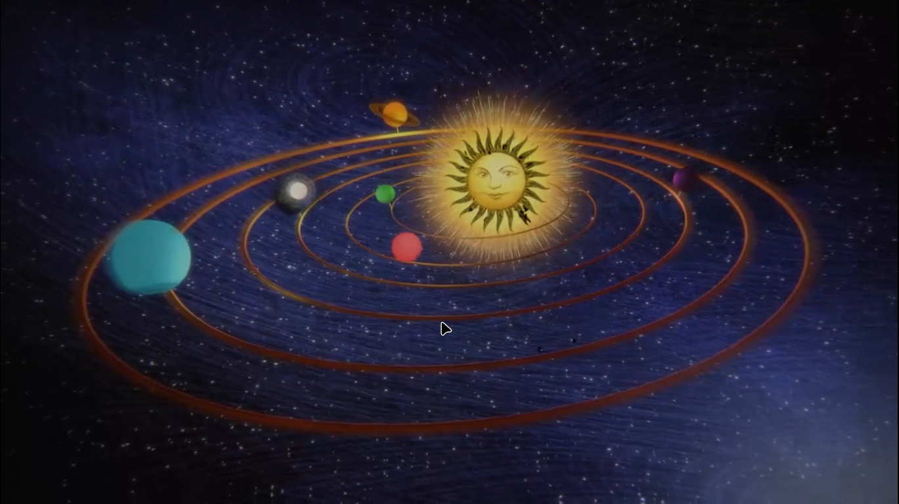Newton explain what will happen on firing can with different power , with sufficient velocity cannpn ball cal leave earth
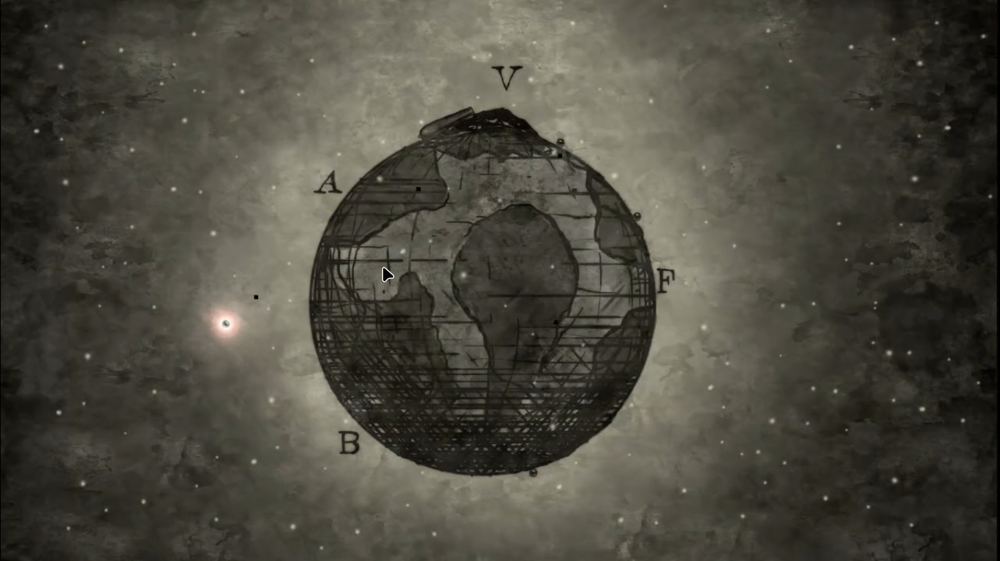Its implications
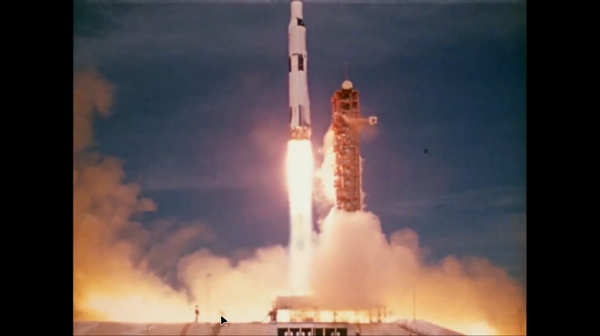 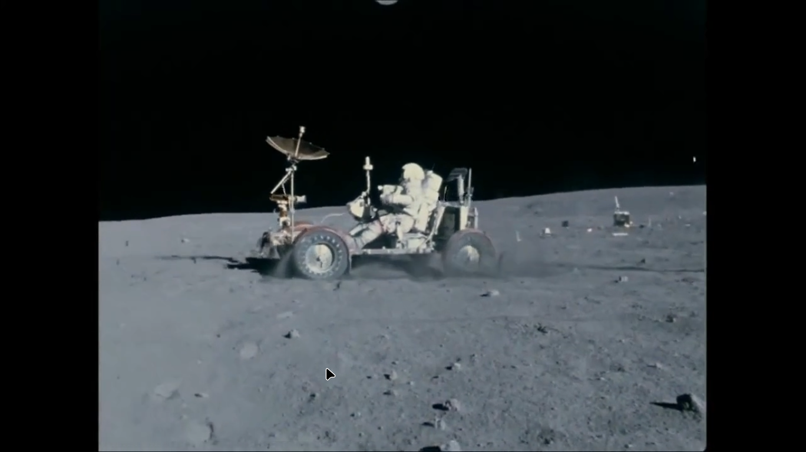 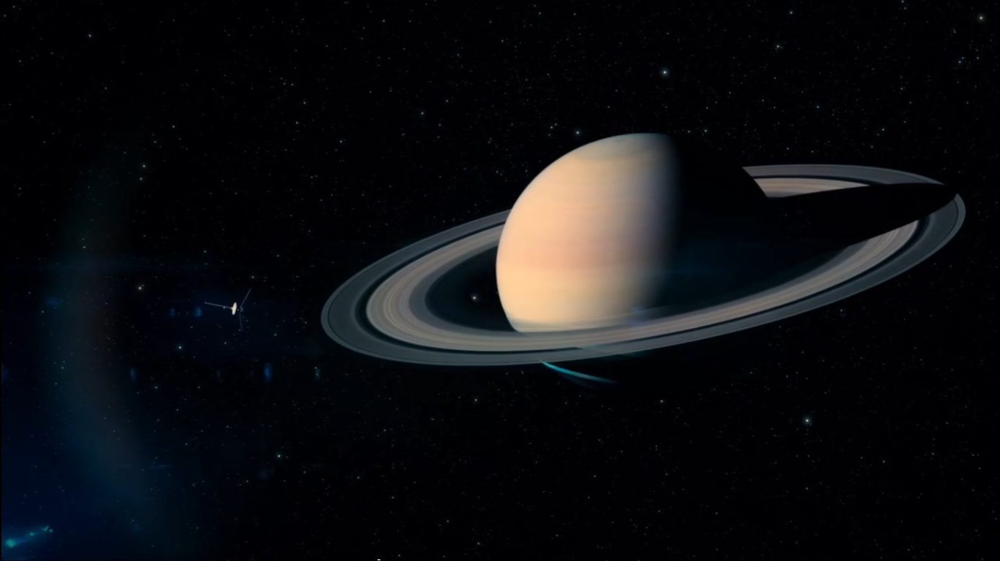Newton laws also removed the fear of commets(due to false believes)
Edmond Halley : made whether maps ,that are used today , also he drawn the magnetic field of earth , all stars are moving
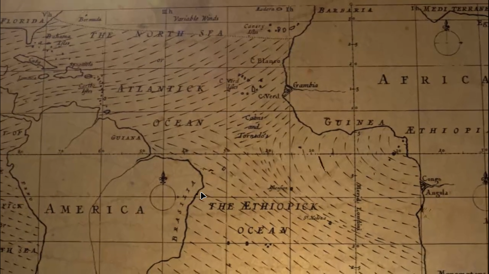Edmond Halley : found that same commet is seen every 76 years in the past.
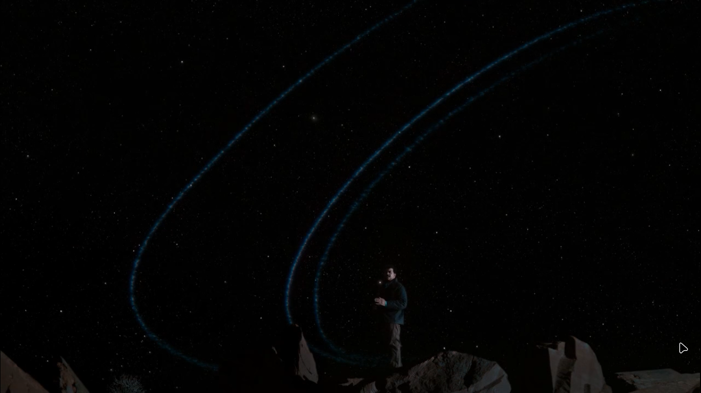Commets can come and go ,in and out of solar system
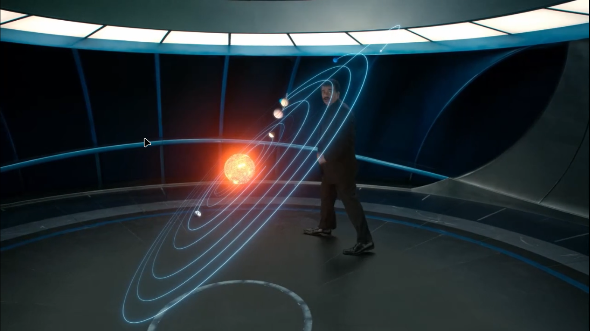 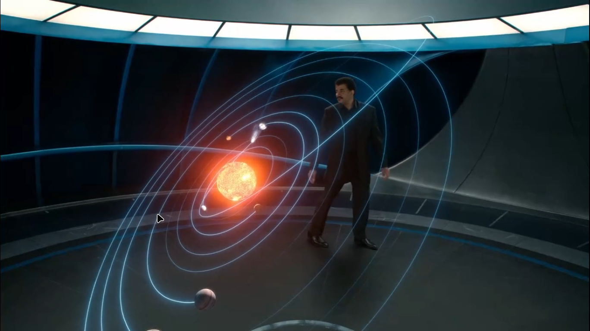Everything Everything in our solar system goes around sun ,gravity attracts everything around sun ,but they also move in their path ,thus they don't fall into the sun
Because of newton's laws of gravitation ,we can predict that milky way galaxy and andromida galaxy will mix together
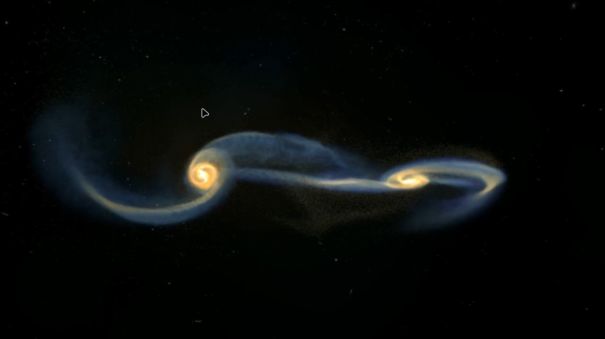 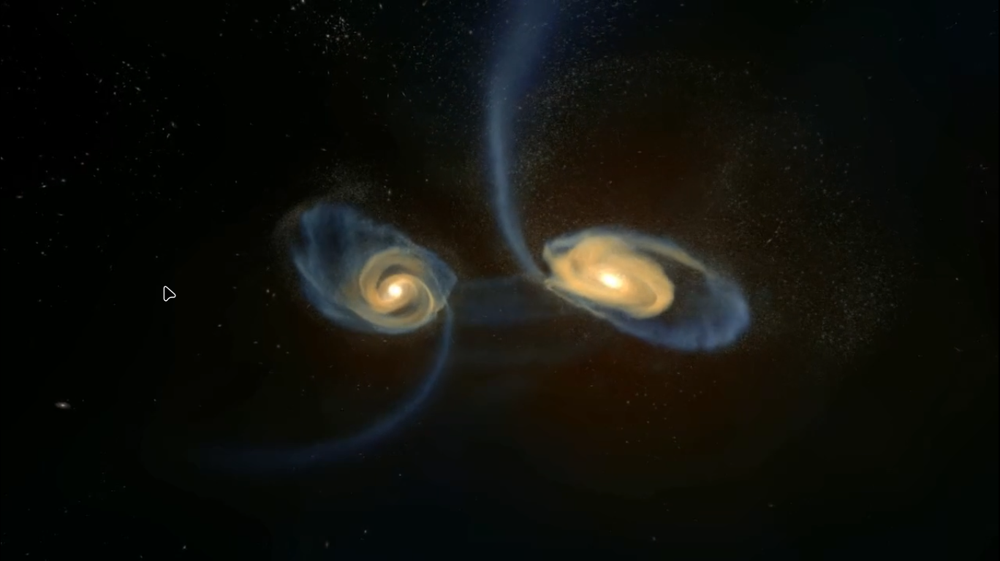 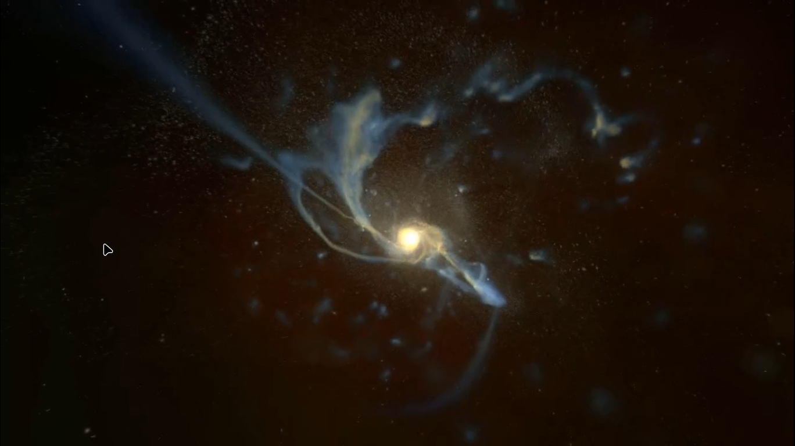